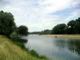
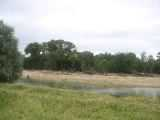
La Loire est calme en cette période, mais ce printemps elle avait tout envahi, rasant l'île en face, fermant le bras qui la séparait de la forêt, et contournant maintenant le total. Le pont-canal de Briare est, lui, bien ancré. C'est un des rares de ce type en France, où un canal passe au dessus d'un cours d'eau sans communiquer avec lui, et c'est un bon sujet de promenade ou de photo aéro-cerf-volistique.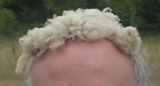
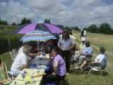
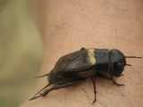
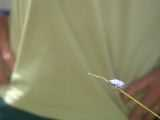
Après le repas, leçon d'entomologie : un grillon des champs et une je-sais-plus-le-nom d'un bleu iridescent qui chatoie sous le soleil, bien plus beau que sur la photo. On voit aussi des cantharides poudrées d'un jaune safran choisir les voitures ou les chemises comme terrain de repos (ou les ronger ?).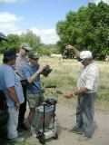
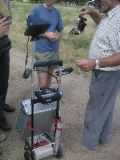
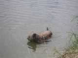
Il fait chaud, mais on reprend quand même les cerfs-volants, car cette année, le vent n'est pas mal, toujours un peu turbulent voire masqué en bas, mais honnête dès qu'on monte un peu. On peut voir le cerf-volant de Marc :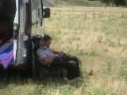
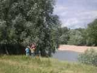
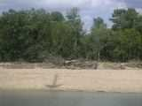
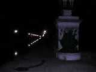